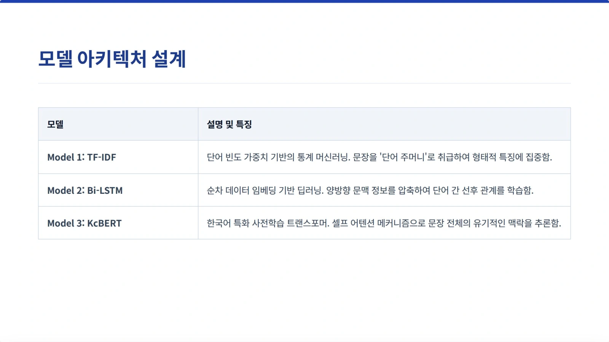
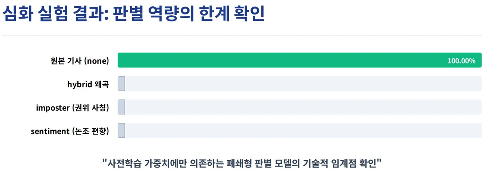

PROJECT 14 / 자연어 처리 · 모델 비교PROJECT 14 / Natural Language Processing · Model Comparison
생성형 AI 시대의 사실 왜곡형 가짜 뉴스 판별Detecting Fact-Distorting Fake News in the Generative AI Era
규칙으로 변조한 기사에서 높았던 정확도가, 유창하게 사실을 왜곡한 기사에서는 유지되지 않았습니다.The high accuracy achieved on rule-based altered articles did not hold for articles that distorted facts fluently.
01 문제 상황 Problem
생성형 AI가 만드는 가짜 뉴스는 문장이 자연스러워 단어 빈도나 문장 형식만으로 판별하기 어렵습니다. 서로 다른 뉴스 분류 모델을 비교하고, 쉬운 변조 데이터에서 얻은 성능이 정교한 왜곡에도 이어지는지 확인했습니다.Fake news produced by generative AI reads naturally, making it hard to detect from word frequency or sentence form alone. The project compared different news classification models and checked whether performance on easily manipulated data carries over to sophisticated distortions.
02 사용 모델과 데이터 Models and Data
모델·기술Models · Techniques
- 비교 모델: TF-IDF + 로지스틱 회귀, Bi-LSTM, 미세조정한 KcBERT.Models compared: TF-IDF + logistic regression, Bi-LSTM, and fine-tuned KcBERT.
- 심화 평가용 기사 생성: Llama-3.3-70B를 Groq API로 활용하고 Claude API도 도입했습니다.Article generation for advanced evaluation: used Llama-3.3-70B via the Groq API and also adopted the Claude API.
데이터·입력Data · Inputs
- 네이버 뉴스 API로 여러 분야의 기사를 수집하고 BeautifulSoup으로 본문을 정제했습니다.Collected articles across several categories with the Naver News API and cleaned the body text with BeautifulSoup.
- 1단계는 실제 기사 250건·규칙 기반 변조 250건. 2단계는 원본 20건과 세 가지 왜곡 유형 각 20건으로 구성한 총 80건입니다.Stage 1: 250 real articles and 250 rule-based manipulations. Stage 2: 80 items in total, consisting of 20 originals and 20 items for each of three distortion types.
03 구현 과정 Implementation
- 정제한 실제 기사와 규칙으로 변조한 기사로 세 가지 분류 모델을 비교합니다.Compares three classification models on cleaned real articles and articles altered by rules.
- 하이브리드 왜곡·권위 사칭·논조 편향 형태의 더 자연스러운 변조 기사를 만듭니다.Creates more natural manipulated articles in the forms of hybrid distortion, authority impersonation, and tone bias.
- 1단계에서 가장 높은 정확도를 보인 KcBERT에 심화 데이터를 입력해 유형별 판별 결과를 비교합니다.KcBERT, which achieved the highest accuracy in stage 1, is fed the advanced dataset to compare detection results by type.

04 핵심 결과 Key Results
- KcBERT · 1단계 정확도KcBERT · Stage 1 accuracy
- 97%
- 심화 변조 기사 판별 성공Advanced manipulated articles detected
- 0 / 60
- 심화 원본 기사 판별 성공Advanced original articles correctly identified
- 20 / 20
제출 자료에 보고된 실험 수치입니다.Experimental figures as reported in the submitted materials.
- 보고서의 1단계 정확도는 TF-IDF + 로지스틱 회귀 30%, Bi-LSTM 51%, KcBERT 97%였습니다.Stage 1 accuracy in the report was 30% for TF-IDF + logistic regression, 51% for Bi-LSTM, and 97% for KcBERT.
- 심화 평가에서 KcBERT는 원본 20건을 모두 맞혔지만, 세 가지 변조 유형은 각각 20건 모두 탐지하지 못했습니다. 데이터 구성에 따라 성능 해석이 크게 달라짐을 보여줍니다.In the advanced evaluation, KcBERT correctly classified all 20 original articles but failed to detect all 20 articles in each of the three manipulation types. This shows that performance interpretation varies greatly depending on the data composition.

05 한계와 발전 방향 Limitations and Next Steps
- 소규모로 직접 구성한 데이터의 결과이므로 모든 뉴스와 언어 모델에 일반화할 수 없습니다. 높은 1단계 점수만으로 사실 확인 능력을 단정하기 어렵습니다.Because the results come from a small, self-constructed dataset, they cannot be generalized to all news or language models. High Stage 1 scores alone are not sufficient to establish fact-checking ability.
- 외부 지식 검색을 결합하는 RAG와 혼합형 판별은 후속 제안이며 이번 실험에서 검증한 모델에 포함되지 않습니다.RAG with external knowledge retrieval and hybrid detection are follow-up proposals and were not among the models validated in this experiment.
자료: 심화 연구 종합 보고서 및 발표자료. 제출 자료를 바탕으로 정리했으며, 결과는 해당 프로젝트의 구현·실험 범위에 해당합니다.Source: comprehensive advanced research report and presentation slides. Compiled from the submitted materials; results apply to the implementation and experiment scope of this project.